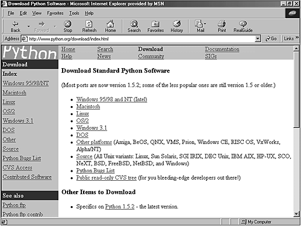
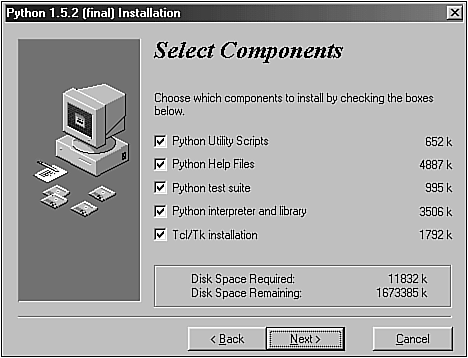
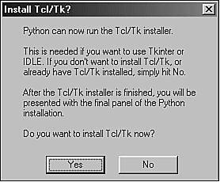

| < BACK | Make Note | Bookmark | CONTINUE > |
Installing and Configuring Python
Setting up Python in your system is a very easy process because all versions are freely available and highly documented. Check the following instructions that show how to download the files from the binary repository. Each distribution includes reference manuals that demonstrate in detail how to install and configure Python for that specific environment. See Chapter 17 for details about how to build Python from source code.
Python's Web site—http://www.python.org/download—has a section that gives you access to all distributions that are available for download (see Figure 1.1).
Figure 1.1. Python's download Web page is the place where you can get the latest Python releases.
Up-to-date versions for the most popular distributions are always available.
Keep this URL because we will go to the site later to download other Python items that we might need.
UNIX Environment
The UNIX distribution is, in my opinion, the best distribution. It comes with POSIX bindings, and it supports environment variables, files, sockets, and so on. It is perfect for all flavors of UNIX.
Linux Installation
These days, all the major Linux distributions include Python, which makes your life simple because you don't have to download the files. Sometimes, Python is even automatically installed for you. Just make sure that you have the latest version.
If you already have Python installed in your machine, and you've got a new Python RPM package, you must execute the following command in order to update the RPM: (Note that this filename reflects the 1.5.2 version.)
rpm -Uhv python-1.5.2-2.i386.rpm
Otherwise, run the following command in your Linux prompt to install the RPM package.
rpm -ihv python-1.5.2-2.i386.rpm
When the installation process is over, check to see whether everything went fine by typing python at the prompt. You should get access to the Python interpreter, and when you are satisfied, press Ctrl+D to leave it.
Perfect! Now you are ready to start coding in Python.
In case you are using a Linux system that doesn't offer RPM support, you need to download the source code and compile it in your machine. Or, check whether your Linux distribution included Python. Instructions for compiling Python are provided in Chapter 17.
Other UNIX Systems
If you are running a UNIX system other than Linux, you need to download the source code and compile it in your own machine.
Download the file py152.tgz from http://www.python.org/download/download_source.html. Note that this file corresponds to version 1.5.2. You might need to change the filename for the latest version.
Following the instructions listed in the README file of the distribution will show you how to build and install the source code.
Macintosh Environment
MacPython is a Python version available for the Macintosh. Jack Jansen maintains it, and you can have full access to the entire documentation at his Web site. Currently, version 1.5.2 is available for download at http://www.cwi.nl/~jack/macpython.html. Beta versions from version 1.6 are also available.
You can also download this distribution at Python's official Web site at http://www.python.org/download/download_mac.html. The full distribution is available in one unique file that also contains Tkinter and an interactive development environment.
Windows Environment
The Win32 and COM extensions by Mark Hammond are the result of an excellent work that is successfully reducing the distance between the overall performance of Python for UNIX and Python for Windows platforms. The following instructions show how to install the Python version for Windows systems. Note that to install the Win32 extensions, you need to install a separate package called Win32all-xxx.exe. You should replace the xxx with the number of the latest available release.
The installation process is very straightforward within Win32 systems (Windows 95/98/2000 and NT). Go to the Python for Windows download page at http://www.python.org/download/download_windows.html and choose a location. If the location you selected isn't available at the moment, choose a mirror site.
Let's download the py152.exe file (Python's version 1.5.2). Now that you have downloaded the file, save it to a location on your local hard disk.
Double-clicking the file will launch an Installation Wizard as shown in Figure 1.2.
Figure 1.2. PythonWin's Installation Wizard guides you through a very simple installation process.
Select everything and confirm the selections. The installation process will start and after Python is installed, you will be asked if you also want to install Tcl/Tk (see Figure 1.3). I strongly suggest that you install it too because later you will learn how to create GUI interfaces using Tkinter. After you confirm it, the Wizard will guide you through Tcl's 8.0.5 for Windows installation. Choose the full installation, confirm it, and that's it. Your Windows system is fully configured to use both PythonWin and IDLE.
Figure 1.3. Installing Tcl/Tk now enables you to create GUI applications later.
I suggest that you spend some time going through all the documentation that was installed in your machine.
Right now you might have everything already set up in your environment.
If you decide later to download and build the source code, download the same source code that is provided for UNIX systems at http://www.python.org/download/download_source.html.
Get the file py152.tgz and follow the instructions listed in the README file. It clearly explains how you could use Microsoft Visual C++ 5.0 to build the source code. See Chapter 17 for more details.
If you are interested in downloading Python 2.0, the following link takes you directly to its download page.
http://www.pythonlabs.com/products/python2.0/download_python2.0.html
At PythonLabs, you have the source tarball available to build Python from the source in the platform of your choice. Note that if you are running Windows, you can download and run the Windows installer as well.
The following links cover the 2.0 distribution.
News about Python 2.0
http://www.pythonlabs.com/products/python2.0/news.html
Python 2.0 Manuals
http://www.pythonlabs.com/doc/manuals/python2.0/
Python 2.0 - The new license
http://www.pythonlabs.com/products/python2.0/license.html
Note
A special note is necessary here to let you know that Python 2.0 doesn't run a separate Tcl/Tk installer anymore. It installs all the files it needs under the Python directory. This was made to avoid conflicting problems with other Tcl/Tk installations that you might have on your system.
| Last updated on 1/30/2002 Python Developer's Handbook, © 2002 Sams Publishing |
| < BACK | Make Note | Bookmark | CONTINUE > |